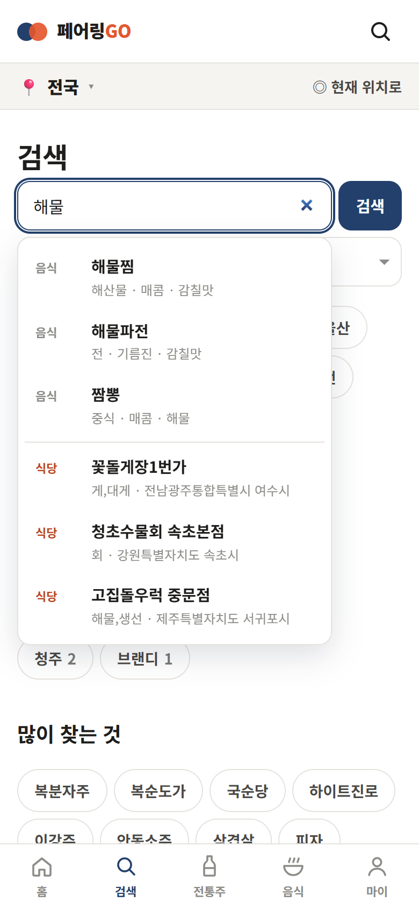
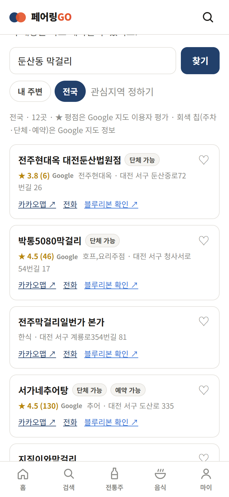
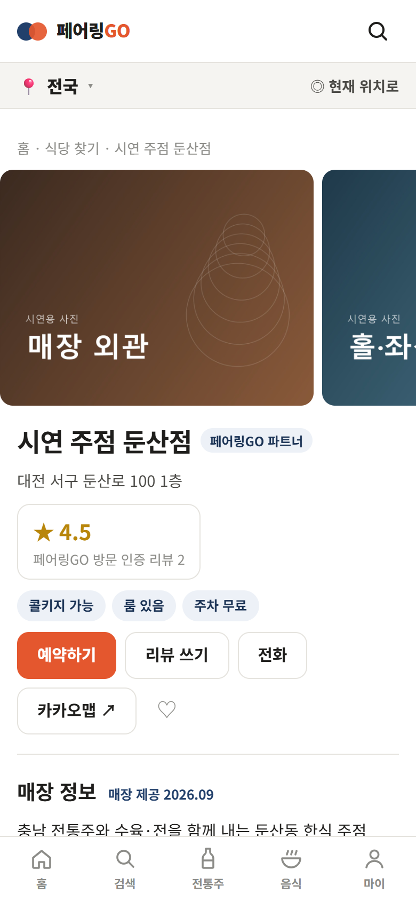
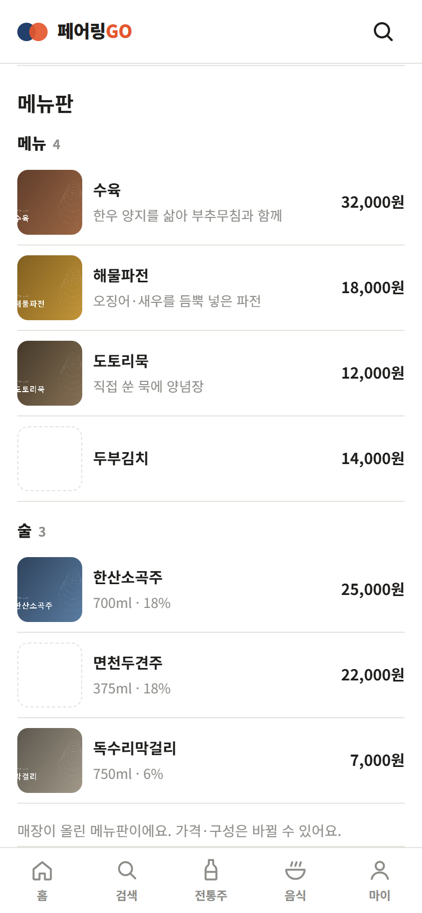
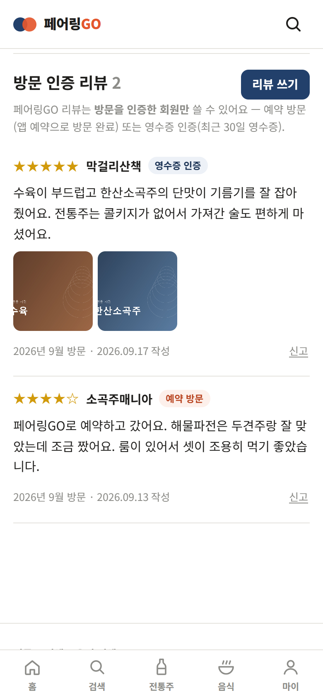
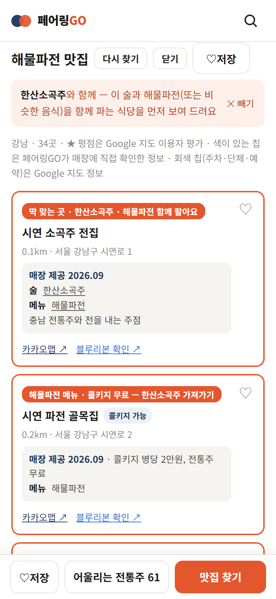
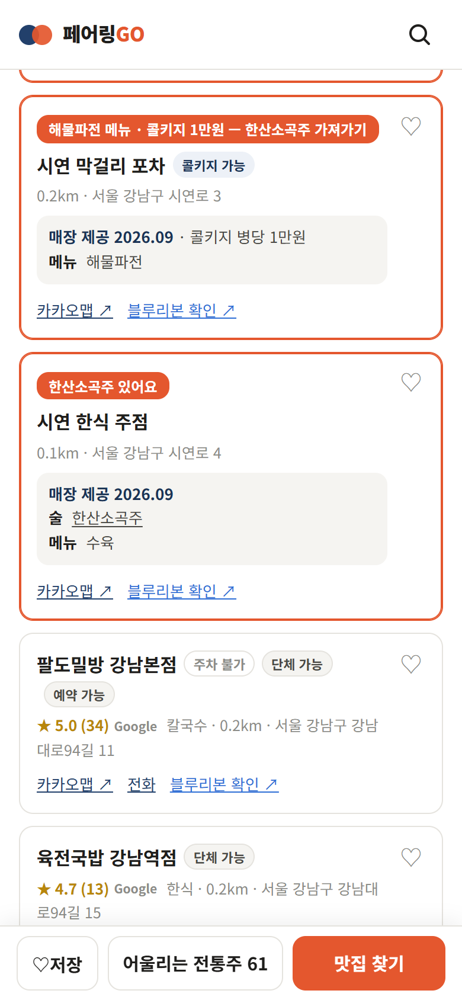
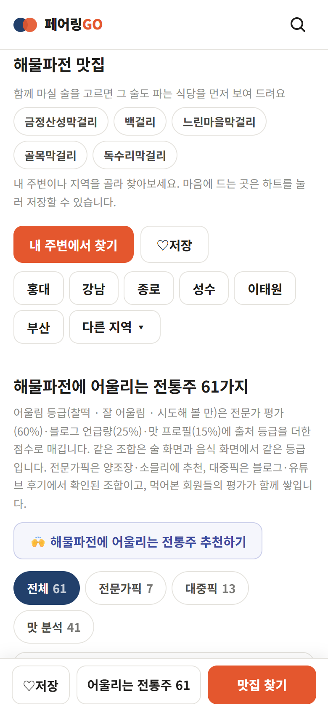

맛있는 전통주에는 어울리는 음식을, 먹고 싶은 음식에는 어울리는 전통주를 찾아 주고 — 그 조합을 먹을 수 있는 식당을 찾아 예약하고, 앱에서 바로 사고, 다녀온 사람만 리뷰를 남기는 곳까지 한 흐름으로 잇습니다.
추천마다 양조장·소믈리에·전문 매체·대중이 실제로 한 말을 근거로 붙이고, 식당 사장님은 전용 파트너 앱에서 메뉴판 사진 한 장으로 메뉴와 술 목록을 올리고 예약을 받으며, 양조장은 같은 앱에서 자기 술을 직접 팝니다.
공개 웹 pairinggo.vercel.app · 파트너 앱 pairinggo-partner.vercel.app · 2026년 9월 21일 기준(전통주 구매 중개 반영) · 9월 9일 개발 착수, 9월 11일 공개 배포
518전통주 (양조장 323곳 · 16개 시도)
143음식·안주 (한식·양식·중식·일식·아시아 등)
4,528술 × 음식 페어링 (근거 링크 554건)
3서비스 — 페어링GO · 파트너 앱 · 운영 어드민
29공개 화면 (+ 파트너 11 · 어드민 11)
73서버 API (두 앱 합계)
34DB 마이그레이션 (예약·주문 SQL 함수 포함)
389자동 테스트 (모두 통과)
차례
1페어링GO 한눈에
2무엇이 다른가 — 차별점
3찾기와 추천
4식당 — 찾기 · 상세 · 메뉴판
4-1고른 조합을 파는 식당 먼저
4-2전통주 목록과 수상 전통주
5예약
5-1전통주 구매 — 앱에서 바로
6방문 인증 리뷰
7회원 · 마이페이지 · 공유
8페어링GO 파트너 (사장님 앱)
9운영 어드민
10추천의 근거
11신뢰 · 안전 장치
12기술 구성
13법 · 운영 원칙
14진행 상황과 다음 단계
부록바뀐 것 (v5.1 → v5.2 → v5.3)
01
페어링GO 한눈에
페어링GO는 술 → 음식, 음식 → 술 양방향으로 추천하고, 추천을 읽은 사람이 사고 · 먹으러 가고 · 예약하고 · 기록하도록 한 흐름으로 잇는 전통주 페어링 서비스입니다. 로그인 없이 모든 추천과 식당 정보를 볼 수 있습니다.
들어온다카카오톡으로 받은 링크나 "육회에 어울리는 술" 같은 검색으로 들어옵니다. 링크 미리보기에는 술·음식 이름과 어울리는 조합 3개가 그림으로 붙습니다.
찾는다술·음식·식당 이름을 치는 동안 자동완성이 뜹니다(초성·입력 중인 글자도 알아들음). "매운 안주" 같은 상황, "대전 전통주" 같은 지역으로도 찾습니다.
이유를 읽는다페어링 카드마다 어울림 등급과 페어링 포인트·주의·맛 프로필이 정리되고, 근거가 있으면 인용문과 원문 링크가 붙습니다.
산다입점 양조장이 파는 술은 앱에서 바로 장바구니에 담아 주문합니다(이름 바로 아래에 가격·배송비·구매 버튼). 입점 전인 술은 양조장 공식몰·네이버쇼핑으로 이동하고, 온라인 판매가 법으로 막힌 술은 주변 판매점을 찾아 줍니다. NEW
먹으러 간다그 음식을 파는 식당을 관심지역·내 위치 기준으로, 또는 식당 이름으로 바로 찾습니다. 술을 골라 왔다면 그 조합을 파는 식당이 맨 앞에 오고, 상세에서 사진·메뉴판·평점을 봅니다. NEW
예약한다파트너 식당은 날짜·인원·시간을 고르면 바로 확정됩니다. 고른 페어링이 요청사항에 담겨 사장님께 전달됩니다. NEW
남긴다다녀온 뒤 방문을 인증(예약 방문 또는 영수증)하고 별점·글·사진 리뷰를 남깁니다. 술·음식 저장, "먹어봤어요" 평가, 회원 추천 페어링도 이어집니다. NEW
세 개의 서비스
서비스
누가 쓰나
하는 일
페어링GO pairinggo.vercel.app
술·음식을 고르는 소비자
페어링 추천, 검색·자동완성, 앱 안 구매(장바구니·주문·배송 조회), 식당 찾기·상세, 예약, 방문 인증 리뷰, 저장·평가·회원 추천, 마이페이지. 반응형 웹 + 홈 화면 설치(PWA)
페어링GO 파트너 pairinggo-partner.vercel.app
식당·양조장·리쿼샵 사장님·직원
가입 신청(업종 고르기 — 식당·양조장·리쿼샵), 오늘 예약 보드, 예약 설정·영업시간·휴무·회차제, 매장 정보, 메뉴판 사진 자동 읽기, 메뉴·술 사진, 대표 사진 10장, 양조장은 판매 탭(입점·배송 설정, 상품·재고·사진, 주문 처리), 새 예약·주문 알림
운영 어드민 pairinggo.vercel.app/admin
운영자
페어링 근거 검수·발행, 회원 추천 검수, 식당 정보 입력, 파트너 승인·업종·카카오맵 연결·변경 되돌리기, 입점 심사·주문 현황, 식당 리뷰 신고 처리, 없는 술 요청, 운영 오류 확인
02 · 핵심
무엇이 다른가 — 차별점
술을 고르는 사람이 지금 쓰는 곳은 지도·리뷰 앱, 예약 앱, 주류 커머스, 블로그 검색으로 흩어져 있습니다. 페어링GO는 "무엇과 함께 먹을까"라는 질문 하나로 이 네 곳의 일을 잇습니다.
페어링GO
지도·리뷰 앱
예약 앱
주류 커머스
블로그·SNS 검색
술 ↔ 음식 추천
양방향, 4,528조합 · 등급·이유
없음
없음
상품 설명 속 추천 안주 정도
글마다 제각각
추천의 근거
출처 등급(양조장 › 소믈리에 › 매체 › 블로그 › 맛 분석)과 원문 링크 공개
—
—
판매자 문구
광고·협찬과 구분이 어려움
전통주 데이터
518종 맛 프로필·양조장·지역·수상·온라인 판매 가능 여부
—
—
판매 상품 위주
흩어져 있음
식당까지 연결
고른 술·음식을 함께 파는 곳(콜키지 포함) 먼저 · 대표 사진 · 메뉴판 · 편의 정보
식당 정보 풍부, 페어링 맥락 없음
예약 가능한 매장 중심
—
—
전통주 구매
추천을 읽은 그 자리에서 주문 · 판매자는 양조장(우리는 중개) · 앱 수수료 시범 0% → 5%
—
—
핵심 기능, 수수료 10~12%대
—
예약
즉시 확정 + 고른 페어링을 들고 예약(사장님 화면에 "해물파전 × 한산소곡주")
매장별 연동
핵심 기능
—
—
리뷰 신뢰
방문 인증(예약 방문·영수증)만 · 휴대폰 인증 1인 1계정 · 사장님 본인 불가 · 신고 3건 숨김
영수증 리뷰 등 운영
예약 방문자 리뷰
구매 후기
검증 없음
사장님 입력 부담
메뉴판 사진 한 장 → AI가 메뉴·술·가격·도수를 표로
직접 입력
직접 입력
—
—
비교는 일반적인 서비스 유형 기준의 정성 비교이며 특정 회사의 기능 전부를 뜻하지 않습니다.
① 근거를 숨기지 않는 추천
모든 조합에 출처 등급이 붙고 화면에서 전문가픽·대중픽·맛 분석으로 나눠 보여 줍니다. 맛 분석 점수도 손으로 짠 규칙이 아니라 실제 근거 조합에서 배운 값이며, 교차검증으로 정확도를 잽니다(10장).
② 페어링이 예약·리뷰까지 따라간다
술을 골라 음식으로 넘어가면 그 조합을 파는 식당이 먼저 나오고, 예약하면 그 페어링이 예약에 담기며, 방문 뒤 리뷰는 "어떤 술과 먹었는지"를 남기는 기록이 됩니다. 추천 → 방문 → 평가가 한 데이터로 이어집니다.
③ 조작하기 어려운 리뷰
방문을 증명한 사람만, 방문 한 번에 하나만 씁니다. 영수증은 AI가 상호·날짜·금액을 읽어 확인하고 사진은 저장하지 않습니다. 평점은 인증 리뷰로만 냅니다(6장·11장).
④ 사장님이 쓰기 쉬운 파트너 앱
메뉴판 사진으로 표를 채우고, 줄마다 사진을 붙이고, 예약은 정원 안에서 자동 확정됩니다. 입점비·수수료 없는 시범 운영으로 시작합니다(8장).
03 · 기능 1
찾기와 추천
기능
하는 일
통합 검색 · 자동완성 NEW
술·음식 이름, 상황("매운 안주"), 지역+종류("세종 전통주"), 오타·초성("ㅎㅅ")까지. 치는 동안 술·음식은 0.12초 만에, 식당은 두 글자 이상 멈췄을 때 이름이 맞는 곳 3곳을 제안. 방향키·엔터로 고르기
전통주 · 음식 목록
종류·지역·양조장으로 거르기(가나다순). 음식은 한식·양식·중식·일식·안주·간식·디저트 대분류 → 소분류
관심지역
현재 위치 또는 시·도 선택(수도권은 구 단위). 검색·목록·식당 찾기가 그 지역을 먼저 보여 줌
전통주 상세
맛 프로필 막대(바디·산미·단맛·탄산·향), 어울리는 음식과 근거, 공식몰·네이버쇼핑, 주변 판매점, 공유
음식 상세
맛 프로필(무게·기름기·매운맛·감칠맛·짠맛·단맛), 어울리는 전통주와 근거, 주변 맛집(평점·편의 정보)
페어링 카드
찰떡 · 잘 어울림 · 시도해 볼 만 + 포인트·주의·맛 요약. 전문가픽 · 대중픽 · 맛 분석 · 회원픽 탭
순위 · 기획
요즘 많이 찾는 전통주 10(매일 00시 재계산, 급상승 표시) · 월간 트렌드 리포트 · 요즘 핫한 페어링 · 미쉐린 선정 식당(최근 3년) · 수상 전통주(우리술품평회 5년 · 대한민국주류대상 3년)
구매 연결
"양조장 공식몰로 이동". 주간 자동 점검으로 끊긴 링크 표시, 온라인 판매 불가 7종은 판매점 안내

자동완성 — "해물"을 치는 동안 음식·식당 후보 NEW전통주 상세 — 맛 프로필, 공식몰 구매어울리는 음식 — 전문가픽·대중픽·맛 분석, 인용과 출처음식 상세 — 맛 프로필과 맛집 찾기
화면은 휴대폰 크기(390×844)로 캡처. 기존 화면은 2026-09-15 공개 웹, NEW 표시는 2026-09-19 개발 서버.
04 · 기능 2
식당 — 찾기 · 상세 · 메뉴판 NEW
음식 상세의 "맛집 찾기", 식당 이름 검색(/places), 술·음식 검색 결과의 "‘검색어’ 식당" 칸 어디서든 식당 카드를 누르면 매장 상세로 들어갑니다. 파트너가 아닌 식당도 상세 페이지가 있습니다.
식당 카드
이름이 검색어와 맞는 곳을 먼저(카카오는 메뉴명·태그까지 봐서 이름이 다른 곳도 주기 때문)
평점 두 가지를 나눠 표시 — 페어링GO 방문 인증 리뷰 평균과 Google 지도 평점
편의 칩: 주차(무료·유료·발레·노상·불가) · 단체 · 예약 · 콜키지 · 룸 — 매장·운영자가 확인한 값은 남색, Google 값은 회색
미쉐린 배지(자체 ★+연도, 로고 아님), 운영자 확인 상자, 메뉴판 미리 보기 사진 4장, [예약하기]
매장 상세
대표 사진(파트너가 올린 최대 10장) — 옆으로 넘기고 누르면 크게
평점 둘 · 편의 칩 · [예약하기] [리뷰 쓰기] [전화] [카카오맵] [네이버 지도] [저장]
매장 정보: 한 줄 소개, 취급 전통주(카탈로그와 이름이 같으면 그 술 페이지로)
메뉴판: 한 줄 = 사진 · 이름 · 설명 · 가격(술은 용량·도수). 적혀 있지 않은 칸은 빈칸 그대로
방문 인증 리뷰 목록

식당 찾기 — "둔산동 막걸리", Google 평점·편의 칩

매장 상세 — 대표 사진, 두 평점, 칩, 예약·리뷰 버튼

메뉴판 — 사진·이름·설명·가격, 술은 용량·도수

방문 인증 리뷰 — 영수증 인증·예약 방문 배지
"시연 주점 둔산점"과 그 사진·리뷰는 설명서 캡처를 위해 만든 시연 데이터이며 캡처 뒤 모두 지웠습니다. 식당 찾기 결과는 실제 카카오 로컬 검색과 Google 지도 평점입니다.
04-1 · 기능 2-1
고른 조합을 파는 식당 먼저 NEW
술을 검색해 어울리는 음식을 골랐다면, 사용자가 원하는 건 "그 술을 그 음식과 함께 먹을 수 있는 곳"입니다. 술 화면의 페어링 카드를 누르면 고른 술이 음식 화면까지 따라가고(주소의 ?d=), 맛집 목록이 그 술과 같은·비슷한 음식을 함께 파는 식당, 같은 음식에 콜키지가 되는 식당을 맨 앞에 둡니다. 음식 화면으로 바로 왔다면 잘 어울리는 술 5가지를 버튼으로 골라 같은 효과를 냅니다. [예약하기]를 누르면 술과 음식이 둘 다 예약 요청사항에 담깁니다.

한산소곡주 + 해물파전 — "딱 맞는 곳", 그다음 같은 음식 + 콜키지 무료

콜키지 1만원은 무료 다음, 그다음 "그 술만 있는 곳"

음식 화면에서 바로 왔을 때 — 함께 마실 술 고르기
"시연 ○○" 식당은 캡처용 시연 데이터(캡처 뒤 삭제), 일반 식당은 실제 카카오 검색 결과와 Google 평점입니다.
순위 (술을 골랐을 때)
순서
조건
카드 맨 위 문구
1
그 술 + 같은 음식
딱 맞는 곳 · 한산소곡주 · 해물파전 함께 팔아요
2
그 술 + 비슷한 음식
한산소곡주 있어요 · 비슷한 메뉴 김치전
3
같은 음식 + 콜키지 가능
해물파전 메뉴 · 콜키지 무료 — 한산소곡주 가져가기
4
그 술만
한산소곡주 있어요
5
비슷한 음식 + 콜키지 가능
비슷한 메뉴 김치전 · 콜키지 1만원 — …가져가기
6~
같은 종류 술(소곡주 대신 두견주) → 같은 음식만 → 비슷한 음식만 → 나머지 식당(평점·관련도 순)
규칙
콜키지 싼 곳부터 — 같은 순위 안에서 무료 → 싼 금액 → 금액 모름 → 콜키지 정보 없음. 금액은 사장님이 적은 콜키지 메모에서 읽습니다("병당 1만원", "1만5천원", "무료", "전통주 무료"는 무료).
3번이 4번보다 앞인 이유 — 술을 가져가면 원하는 조합 그대로 먹을 수 있지만, 그 술만 있는 곳엔 그 음식이 없습니다.
근거는 확인 정보만 — 파트너 메뉴판·운영자 확인 정보로만 판단(카카오·구글은 메뉴·콜키지를 주지 않음). 카카오 검색에 없던 주변 확인 식당도 5곳까지 더합니다.
04-2 · 데이터
전통주 목록과 수상 전통주 NEW
온라인으로 살 수 있는 술은 법에서 정한 전통주(민속주·지역특산주)뿐입니다. 그래서 "우리가 아는 전통주를 빠짐없이"가 곧 서비스의 폭이 됩니다. 2026년 9월 20일 목록을 225종에서 518종으로 넓혔습니다.
어떻게 넓혔나
출처
종
무엇
수상작
251
우리술품평회(최근 5년)·대한민국주류대상 우리술 부문(최근 3년) 수상작 중 목록에 없던 술
더술닷컴(aT) 후보
42
거점(충남·세종·대전)·새 양조장·양조장 추천 음식이 있는 술 우선
수입 원료·대형 주류회사·무알코올 제품은 뺐습니다(온라인 판매가 안 되거나 전통주가 아님). 도수를 모르는 술은 출처를 확인한 뒤 넣었습니다.
한 종을 넣을 때 채우는 것
사실 — 이름·양조장·도수·지역·원료·수상 이력
설명 문장 — 사실만 가지고 새로 씁니다(공공 자료 원문은 옮기지 않습니다)
맛 프로필(단맛·산미·바디·탄산·향) — 종류별 평균에서 원료·도수로 보정한 추정값
페어링 8개 — 양조장이 공개한 추천 음식은 근거 링크가 달린 공식 페어링, 나머지는 맛 분석
구매처 — 업체가 공개한 공식 스토어 링크(446종). 없으면 네이버쇼핑 검색으로 연결
수상 전통주 화면
두 대회를 한 화면에서 봅니다 — 농림축산식품부 우리술품평회(최근 5년)와 조선비즈 대한민국주류대상 우리술 부문(최근 3년). 대통령상과 Best of Best가 맨 위에 오고, 부문·등급·양조장·구매 버튼이 함께 보입니다. 지금 324종에 수상 이력이 붙어 있습니다(품평회 87 · 주류대상 250).
항목
내용
명단
정부 보도자료 · 요즘이술(주류대상 공식 수상작 화면)에서 수상 사실과 제품 기본 정보만. 소개글·심사평은 가져오지 않습니다
대조
양조장이 같고 이름이 같을 때만 붙입니다. 도수가 다르면 다른 제품으로 봅니다(도한 청명주 13.8 ↔ 15)
파트너 화면은 시연 매장(캡처 뒤 삭제)으로 찍었습니다. 번호는 화면에서 가려진 상태입니다.
09
운영 어드민
파트너 가입 — 매장 직접 입력 — 카카오맵에 없는 매장은 적어서 신청, 운영자가 승인 때 카카오맵 장소와 연결 NEW
화면
하는 일
대시보드
검수 대기·신고·운영 오류 알림
근거 검수
수집한 후보 11,584건 중 근거가 없는 술·음식부터 — 같은 조합 묶기, 한 술 몰림 방지, 50장씩
발행
승격한 근거를 공개 카탈로그로. 스냅샷을 남기고 되돌리기 가능
회원 추천 검수
카탈로그에 없는 이름의 추천 글 연결·숨김
식당 정보
전화·방문으로 확인한 콜키지·룸·주차·메뉴·취급 술 입력, 메뉴판 사진 읽기
파트너
가입 승인·반려·정지·재개, 업종 바꾸기(식당·양조장·리쿼샵), 직접 입력 매장의 카카오맵 장소 연결, 매장 정보 변경 이력·되돌리기
구매 NEW
입점 심사 — 주류 통신판매 승인 번호가 없으면 판매를 열 수 없음 · 앱 수수료율 · 최근 주문 · 발송이 늦은 주문 경고
없는 술 요청
검색 실패어·식당 메뉴판·회원 추천에서 카탈로그에 없는 술 이름을 모아 보여 줌
식당 리뷰
신고·숨김 리뷰 검토 → 복구(신고 기록 비움)·숨김·삭제 NEW
운영 오류
서버·화면에서 난 오류를 묶어 횟수·마지막 시각으로. 번호·이메일은 가려서 저장
10 · 핵심 차별점
추천의 근거
페어링GO의 추천은 취향이 아니라 출처에서 나옵니다. 조합마다 출처 등급이 붙고 등급이 높은 근거가 먼저 보입니다. 근거가 없는 조합은 "맛 분석"이라고 따로 표시합니다.
묶음
출처 등급
조합 수
무엇인가
전문가픽
양조장 공식
200
양조장·명인이 직접 밝힌 추천(공식몰 설명, 인터뷰, 협업 메뉴)
소믈리에·명인
32
전통주 소믈리에·셰프의 페어링 의견
대중픽
전문 매체
245
신문·매거진 기사에서 확인된 조합
블로그·카페
77
실제 시음 후기 — 인용문(120자 이내)과 원문 링크 보관
맛 분석
근거에서 배운 친화도
3,974
아래 "맛 분석 점수" 참고
합계
4,528
이 중 출처 링크·인용문이 붙은 조합 554건
순위 · 등급
종합 점수 = 전문가 평가 60% + 대중 언급량 25% + 맛 분석 15% + 출처 등급 보너스(양조장 +4 · 소믈리에 +3 · 매체 +1.5 · 블로그 +0.5). 화면 순서는 등급 → 근거 링크 있음 → 점수. 찰떡 · 잘 어울림 · 시도해 볼 만 세 단계이며, 같은 조합은 술 화면과 음식 화면에서 같은 등급입니다. 회원의 "먹어봤어요" 평가는 점수와 섞지 않고 따로 보여 줍니다.
맛 분석 점수 — 규칙에서 학습으로
손으로 짠 맛 궁합 규칙은 실제 근거 조합 491건을 AUC 0.50(무작위 수준)으로밖에 골라내지 못했습니다. 그래서 근거 조합에서 센 친화도 — ① 술 종류 × 음식(분류에서 출발해 그 음식 자체 근거로 보정) ② 술 종류 × 매운 음식 ③ 술 종류 × 기름진 음식 — 의 로그 합으로 바꿔 교차검증 AUC 약 0.60이 되었습니다. 테스트가 0.56 아래로 떨어지면 실패하고, 근거가 늘면 다시 계산해 저절로 좋아집니다.
근거는 이렇게 쌓입니다
수집네이버 블로그·카페·뉴스, 유튜브 공식 검색 API로 "{술} 안주", "{음식} 전통주" 같은 글을 모읍니다. 제목·요약에 술·음식 이름이 가까이 함께 나온 글만 후보로 남기고 가격 표기·흔한 단어·보도자료 복사는 거릅니다.
검수 대기열근거가 하나도 없는 술·음식을 채우는 후보부터 앞에 세우고, 같은 조합은 한 장으로 묶습니다.
사람이 읽는다"같이 먹었다·어울린다"는 문장만 인정하고, 메뉴판 나열·광고·협찬은 거절합니다.
발행양조장 공식·소믈리에 근거 1개 또는 근거 2개 이상이면 공개합니다. 발행마다 스냅샷을 남깁니다.
11
신뢰 · 안전 장치
영역
장치
추천
출처 등급·원문 링크 공개, 추정은 추정이라고 표시, AI 생성 페어링은 배지. 회원 평가와 근거 점수 분리
계정
1인 1계정(같은 이메일·인증 번호 중복 가입 금지), 첫 화면 로그아웃, 연속 로그인 실패 잠금(회원 10회·파트너 5회), 비밀번호 scrypt 해시
리뷰
방문 인증만 · 방문 한 번에 하나 · 사장님 본인 불가 · 신고 3건 자동 숨김 · 임시조치 절차(6장)
예약
DB 함수로 정원 판정(동시 요청에도 초과 없음), 노쇼 제한, 매장 취소 사유 필수
파트너
가입 신청 → 운영자 승인(사업자 진위·휴폐업 확인), 매장 정보 변경 이력 + 되돌리기, 운영자 전용 값(내부 연락처·메모)은 공개 API에 내보내지 않음
사진·파일
메뉴판·영수증 사진은 읽은 뒤 저장하지 않음. 올린 사진 주소는 우리 저장소 것만 통과(다른 사이트 주소·스크립트 차단). 안 쓰는 사진은 크론이 정리
개인정보
필요한 것만 수집, 번호는 화면에서 가림, 예약 기록 1년·인증 기록 1일 뒤 삭제, 탈퇴 시 게시물·사진 삭제, 오류 기록에서도 번호·이메일 가림
시스템
비밀키는 서버 전용, 라우트별 요청 제한, 서명 쿠키(위조 방지), DB 행 수준 보안(RLS) 켜고 서버만 접근, 운영 오류 자동 기록
12 · 기술
기술 구성
페어링GO (소비자)
Next.js 16 App Router · React 19 · TypeScript
공개 화면은 서버 렌더(검색 유입), 반응형 + PWA
공개 API /api/v1/* · 크론 · 어드민
페어링GO 파트너
Next.js 16 · 별도 Vercel 프로젝트
서명 쿠키 로그인 + 카카오·네이버 OAuth 직접 구현
PWA + 웹 푸시
미니앱 (후순위)
Vite + React 19 정적 번들
앱인토스용 · 서버 코드 없음
같은 추천 엔진 사용
▼ 공용 코드 (pnpm workspaces 모노레포) ▼
packages/shared
검색 엔진·페어링 점수·학습 친화도·조합 순위·예약 규칙·리뷰·영수증 대조·메뉴판 정리·배송비·장바구니·주문 상태·수수료 — 순수 함수 + 테스트 389개
packages/server
두 앱 공용 서버 코드 — DB·비밀번호·카카오·예약·판매/주문·알림·문자·메뉴판/영수증 읽기·오류 기록
packages/db
SQL 마이그레이션 34개, 시드·내보내기, 엑셀 가져오기, 근거 자동 수집·재계산 도구
scripts
주간 구매 링크 점검(끊긴 링크·품절)
▼ 데이터 · 외부 연동 ▼
Supabase (서울 리전)
Postgres — 카탈로그·근거·회원·예약·파트너·리뷰·판매/주문, SQL 함수 reserve()·reservation_transition()·place_order()·cancel_order_items() · Storage 공개 버킷(회원 추천·메뉴·상품·리뷰 사진)
카카오 로컬 — 식당·판매점 검색Google Places — 평점·편의 정보Claude API (claude-opus-5) — 메뉴판·영수증 읽기, 구조화 출력솔라피 — 문자 인증·예약/주문 알림톡결제대행사(PG) — 계약 예정웹 푸시(VAPID)Auth.js v5 — 이메일·카카오·네이버·구글Vercel — 호스팅·자동 배포·크론카카오 JS SDK — 공유 카드
기술적으로 신경 쓴 점
주제
어떻게
규칙은 한곳에, 테스트 먼저
검색·점수·예약 가능 시간·노쇼·리뷰·영수증 대조·중복 가입 판정·고른 조합 순위와 콜키지 금액 읽기·배송비 계산과 주문 상태 전이는 모두 packages/shared의 순수 함수. 화면·서버는 가져다 쓰기만. Vitest 389개
동시성
예약 정원과 주문 재고는 앱이 아니라 DB 함수가 행을 잠그고 판정 — 예약 동시 20건 시험에서 초과 0건, 주문은 재고를 잠그고 깎아 마이너스가 되지 않음
한국 시간
서버는 UTC — 예약 가능 시간·당일 마감·노쇼·영수증 30일은 모두 한국 시간 기준 함수로 계산
AI 사용
메뉴판·영수증 읽기에만. 스키마를 강제한 구조화 출력, 지시문 캐시, 거절 시 대체 모델. 결과는 공용 규칙으로 한 번 더 정리하고, 카탈로그에 없는 이름은 연결하지 않음. 사진은 저장하지 않음
비용 관리
카카오는 사용자가 누를 때만, 10분 캐시. Google은 30일 캐시·하루 150회. AI는 매장당 하루 20번(메뉴판)·회원당 하루 5번(영수증)
검색 유입
공개 화면 서버 렌더, 술·음식별 링크 미리보기 그림 자동 생성, sitemap·robots, 한글 슬러그
운영
git push → Vercel 자동 배포(두 앱). 크론: 매일 00시 순위·급상승 재계산, 아침 예약 안내·보관 기한 정리·사진 정리. 서버 오류는 묶어서 기록(로컬 개발 오류는 제외)
다크 모드 · 접근성
색은 토큰으로, 파트너 앱 라이트·다크 대응. 키보드 선택(자동완성 ↑↓·엔터), 한글 조합 중 엔터 무시, 스크린리더 라벨
만 19세 이상만 가입, 전 페이지 주류 경고문구. 온라인 판매가 허용되는 전통주만 팔고 연결, 온라인 판매 불가 주류는 판매점 안내. 페어링GO는 통신판매중개자로서 주류를 자기 책임으로 사거나 팔지 않음 — 판매자는 통신판매 승인을 받은 입점 양조장
개인정보
개인정보처리방침에 수집 항목·목적·보유 기간·위탁(Supabase·Vercel·솔라피·Anthropic·결제대행사)·국외 이전 명시. 항목·목적이 바뀌면 동의 버전을 올려 기존 회원도 다시 동의(현재 2026-09-21). 예약 정보의 매장 제공, 주문 정보의 판매자 제공은 건마다 동의. 주문·결제 기록은 전자상거래법에 따라 5년(분쟁 기록 3년) 분리 보관
게시물
이용약관 제8조(게시물)·제8조의2(식당 리뷰) — 금지 게시물, 신고·숨김, 권리 침해 임시조치(정보통신망법), 평점 조작 금지
예약
이용약관 제6조의2 — 페어링GO는 중개자, 즉시 확정·취소 기한·노쇼 제한 기준 명시. 파트너 약관에 손님 정보 목적 외 이용 금지
전통주 구매 NEW
이용약관 제6조의3 — 중개자 지위·판매자 신원 고지, 만 19세, 배송비는 판매자가 정함, 발송 전 취소, 청약철회 7일(변심은 왕복 배송비·하자는 3개월·개봉 시 제한), 환불 3영업일, 분쟁 창구. 파트너 약관 4의2(입점 자격·판매자 책임·냉장 포장)·5(앱 수수료 0%→5%, 결제수수료 2.5% 내외는 PG 몫, 월 2회 정산 명세)
데이터 수집
공식 API만 사용. 네이버 플레이스·캐치테이블 화면·스마트스토어 자동 수집은 하지 않음. 블루리본 목록은 계약 전 가져오지 않음. 공공데이터(aT) 문구는 원문 그대로 싣지 않음
사진 권리
파트너는 직접 찍었거나 쓸 권리가 있는 사진만 올림(파트너 약관). 회원 리뷰 사진도 타인 얼굴·차량 번호 주의 안내